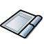
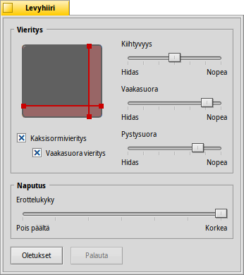

Suomi
Suomi Français
Français Deutsch
Deutsch Italiano
Italiano Русский
Русский Español
Español Svenska
Svenska 日本語
日本語 Українська
Українська 中文 ［中文］
中文 ［中文］ Português
Português Slovenčina
Slovenčina English
EnglishTouchpad
| Työpöytäpalkki | ||
| Sijainti | /boot/system/preferences/Touchpad | |
| Asetukset | ~/config/settings/Touchpad_settings |
This panel offers several touchpad related settings that are interesting when you're running on a notebook.
By dragging the red vertical or horizontal lines on the touchpad representation, you set the scroll area (slightly reddish against the gray general touch area). Moving your finger on that part of the pad will move the scrollbars of a window accordingly.
To the right are sliders to set the general scroll acceleration and the vertical and horizontal scrolling speed.
The acceleration setting decides how much quicker a list scrolls by if you swish over the scroll area very fast. The scrolling speeds control the general speed when using the scroll area in a "normal" way.
Below the touchpad graphic are checkboxes to enable "Two finger scrolling" for vertical and horizontal scrolling. Move two fingers in parallel vertically or horizontally to move the scrollbars of a window. At least for me, it works best if with one finger from the left and one from the right hand.
If you feel comfortable using this feature, you can dispense with setting scroll areas and instead use the whole pad for normal navigation.
At the bottom is another slider to set the tap click sensitivity. If your taps keep getting ignored, increase the sensitivity. If the system registers clicks all the time, while all you want is to move the mouse pointer, try decreasing it.
| nollaa kaikki oletusarvoihin. | ||
| brings back the settings that were active when you started the Touchpad preferences. |
Here is a tip that's not related to the Touchpad preferences, but fits the general topic:
Did you know that you can do a drag and drop just by using the touchpad, i.e. not using the buttons? Just do a double click without lifting the finger after the second click. The picked up icon will stick to the mouse pointer and you can drag it around by moving your finger. Lifting your finger will drop the icon.
If your finger reaches a border of the touchpad while dragging an icon, but the mouse pointer hasn't yet reached the screen edge, how can you keep on dragging your icon? As soon as you lift your finger, the icon would be dropped.
Depending on your hardware, there's a nifty feature: just leave your finger without lifting at the touchpad edge. The mouse pointer will keep on moving on auto-pilot.